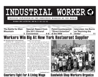
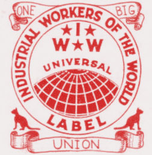

Submitted on Sat, 10/29/2011 - 12:45am
October 23, 2011
WHEREAS, the working class and the employing class have nothing in common; and
WHEREAS, we are in the throes of a Second Gilded Age; and
WHEREAS, 2011 has been a year of unprecedented working class struggle around the globe; and
WHEREAS, the working people of Albuquerque and New Mexico are standing up as a class against the economic elite;
BE IT RESOLVED the Albuquerque General Membership Branch of the Industrial Workers of the World offers its full support to the Occupy movement, locally and worldwide.
Contact: abq [at] iww.org
Submitted on Sat, 10/29/2011 - 12:36am
Headlines
- Workers Win Big at New York Restaurant Supplier
- Bay Area Couriers Fight for Living Wage
- Kansas City Sandwich Shop Workers Organize
Features:
- Special: Report from the 2011 General Convention
- Interview: Joe Burns on “Reviving the Strike
- The Beginnings Of Revolutionary Unionism In Romania
Download a Free PDF of this issue.
Submitted on Thu, 10/13/2011 - 4:39pm
Greetings Fellow Workers,
On behalf of our Union, the Richmond, Virginia General Membership Branch of the Industrial Workers of the World stand in solidarity with the United States Postal Workers Union and its effort to preserve the peoples post office from further privatization.
In 1967 U.S. President Lyndon B. Johnson appointed a Commission on Postal Reorganization, chaired by AT&T’s Frederick R. Kappel, to “determine whether the postal system as presently organized is capable of meeting the demands of our growing economy and our expanding population.” In June 1968, the Commission found that it was not.[1]
Submitted on Wed, 09/28/2011 - 1:28pm
On behalf of our union, the General Executive Board of the Industrial Workers of the World sends our support and solidarity to the occupation of Wall Street, those determined to hold accountable our oppressors.
This occupation on Wall Street calls into question the very foundation in which the capitalist system is based, and its relentless desire to place profit over and above all else.
When 1% of the ruling class holds the wealth created by the other 99%, it is clear that the watchwords found in our union's preamble, "the working class and the employing class have nothing in common", ring true more than ever.?The IWW does not follow a business union model. We believe that the working class and the employing class have nothing in common and we don't foster illusions to the contrary.
Throughout the world, from Egypt to Greece, from China to Madison, Wisconsin, working class people are starting to rise up. The IWW welcomes this. We see the occupation of Wall Street as another step - no matter how large or small - in this process.
Submitted on Wed, 09/28/2011 - 1:16pm
The General Defense Committee of the Industrial Workers of the World stand in solidarity with our brave brothers and sisters at Occupy Wall Street. We denounce and detest the intimidation, harassment, and brutality exhibited by the New York Police. The actions of the police lay bare the true nature of Wall Street and Capitalism.
We call on all those that still retain a sense of humanity to show their support of the working class by refusing to engage in the brutal silencing of dissent. The only individuals who remain unaffected by the volatility of capitalism, globalization, and the stock market are those who are getting richer from furthering the disparity of all workers through calculated economic calamity. We support all of our brave fellow workers on the front lines of this occupation throughout the United States, and those like it across the world.
We recognize that the true occupying forces are the wealthy ruling classes, their institutions, and the States that legitimize their power. The police and military forces that protect their masters' wealth and power are just as guilty as their masters. Only by uniting as workers and standing together as a class, can we take back our streets and our workplaces.
Solidarity Forever!
General Defense Committee of the IWW